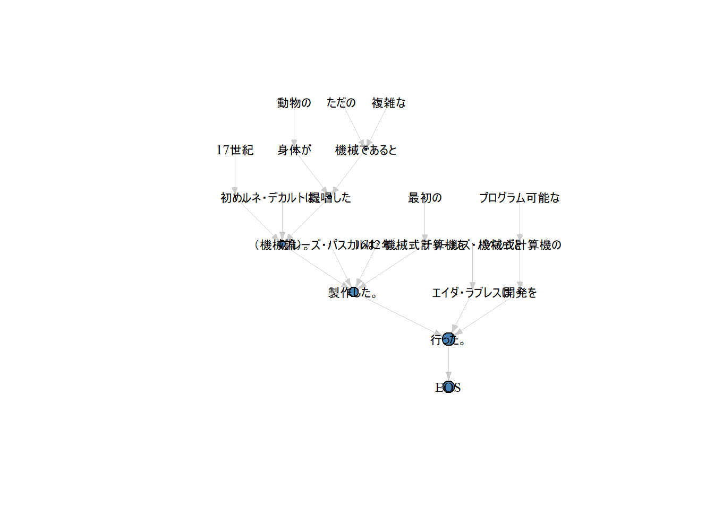

Chapter 4 係り受け解析
4.1 データの読み込み
temp <- tempfile(fileext = ".zip")
download.file("https://nlp100.github.io/data/ai.ja.zip", temp)
temp <- unzip(temp, exdir = tempdir())
ai_ja <- readtext::readtext(temp[1], encoding = "UTF-8")
ai_ja$text[1] %>%
readr::read_lines(skip_empty_rows = TRUE) %>%
length()#> [1] 834.2 係り受け解析
4.2.1 40. 係り受け解析結果の読み込み（形態素）
ここではpaithiov909/pipianを使います。設問の通りにクラスを実装したりはしませんが、だいたい似たような情報を出力できます。ただし、ここでは解析するのはごく一部だけにしています。
res <- ai_ja$text[1] %>%
readr::read_lines(skip_empty_rows = TRUE)
res <- res %>%
sample(20L) %>%
iconv(from = "UTF-8", to = "CP932") %>%
purrr::discard(~ is.na(.)) %>%
pipian::cabochaFlatXML()
res <- pipian::CabochaR(res)$as_tibble()
head(res)#> # A tibble: 6 x 20
#> sentence_idx chunk_idx D1 D2 rel score head func tok_idx ne_value word
#> <int> <dbl> <chr> <chr> <chr> <chr> <chr> <chr> <dbl> <chr> <chr>
#> 1 1 3 0 1 D 1.39~ 1 1 1 I-DATE 年
#> 2 1 6 1 7 D 0.05~ 3 5 3 I-DATE 月
#> 3 1 6 1 7 D 0.05~ 3 5 4 O に
#> 4 1 6 1 7 D 0.05~ 3 5 5 O は
#> 5 1 11 2 7 D 0.69~ 9 10 6 B-PERSON ジェフリ~
#> 6 1 11 2 7 D 0.69~ 9 10 7 I-PERSON ・
#> # ... with 9 more variables: POS1 <chr>, POS2 <chr>, POS3 <chr>, POS4 <chr>,
#> # X5StageUse1 <chr>, X5StageUse2 <chr>, Original <chr>, Yomi1 <chr>, Yomi2 <chr>3文目の形態素列
#> # A tibble: 200 x 1
#> word
#> <chr>
#> 1 プログラミング
#> 2 言語
#> 3 による
#> 4 「
#> 5 」
#> 6 という
#> 7 カウンセラー
#> 8 を
#> 9 模倣
#> 10 し
#> # ... with 190 more rows4.2.2 41. 係り受け解析結果の読み込み（文節・係り受け）
省きます（必要なとき都度探す感じで）。
4.2.3 42. 係り元と係り先の文節の表示
memo <- res %>%
dplyr::filter(POS1 != "記号") %>%
dplyr::group_by(sentence_idx, chunk_idx) %>%
dplyr::mutate(
chunk = stringr::str_c(
word,
collapse = ""
)
) %>%
dplyr::ungroup() %>%
dplyr::select(sentence_idx, chunk_idx, D1, D2, chunk) %>%
dplyr::distinct()
memo %>%
dplyr::filter(D2 != -1) %>%
dplyr::group_by(sentence_idx, chunk_idx, D1) %>%
dplyr::mutate(collocation = stringr::str_c(
chunk,
memo$chunk[memo$sentence_idx == .data$sentence_idx & memo$D1 == .data$D2],
sep = " "
)) %>%
dplyr::ungroup() %>%
dplyr::select(chunk, collocation) %>%
head()#> # A tibble: 6 x 2
#> chunk collocation
#> <chr> <chr>
#> 1 年 年 月には
#> 2 月には 月には 学習できる
#> 3 ジェフリーヒントンにより ジェフリーヒントンにより 学習できる
#> 4 要素間の 要素間の 位置関係まで
#> 5 相対的な 相対的な 位置関係まで
#> 6 位置関係まで 位置関係まで 含めて4.2.4 43. 名詞を含む文節が動詞を含む文節に係るものを抽出
memo <- res %>%
dplyr::group_by(sentence_idx, chunk_idx) %>%
dplyr::mutate(
chunk = stringr::str_c(
word,
collapse = ""
)
) %>%
dplyr::ungroup() %>%
dplyr::mutate(tag = POS1 == "動詞") %>%
dplyr::select(sentence_idx, chunk_idx, D1, D2, chunk, POS1, tag) %>%
dplyr::distinct()
memo %>%
dplyr::filter(POS1 == "名詞") %>%
dplyr::filter(D2 != -1) %>%
dplyr::group_by(sentence_idx, chunk_idx, D1) %>%
dplyr::mutate(collocation = stringr::str_c(
chunk,
memo$chunk[memo$sentence_idx == .data$sentence_idx & memo$D1 == .data$D2 & memo$tag == TRUE],
sep = " "
)) %>%
dplyr::ungroup() %>%
dplyr::select(chunk, collocation) %>%
dplyr::filter(chunk != collocation) %>%
head()#> # A tibble: 6 x 2
#> chunk collocation
#> <chr> <chr>
#> 1 月には 月には 学習できる
#> 2 ジェフリー・ヒントンにより ジェフリー・ヒントンにより 学習できる
#> 3 位置関係まで 位置関係まで 含めて
#> 4 カプセルネットワークが カプセルネットワークが 提唱された。
#> 5 哲学者は、 哲学者は、 語ろうとしてきた。
#> 6 科学とは 科学とは 違う4.2.5 44. 係り受け木の可視化
そういう関数があるのでサボります。
memo <- ai_ja$text[1] %>%
readr::read_lines(skip_empty_rows = TRUE)
memo <- memo[12] %>%
iconv(from = "UTF-8", to = "CP932") %>%
pipian::CabochaTbl()
memo$plot()
4.2.6 45. 動詞の格パターンの抽出
memo <- res %>%
dplyr::select(sentence_idx, chunk_idx, D1, D2, POS1, Original)
pattern <- memo %>%
dplyr::filter(POS1 == "動詞") %>%
dplyr::group_by(sentence_idx, chunk_idx, D1) %>%
dplyr::group_map(~ .x %>%
dplyr::mutate(collocation = stringr::str_c(
"",
memo$Original[memo$sentence_idx == .y$sentence_idx & memo$D2 == .y$D1 & memo$POS1 == "助詞"],
collapse = " "
))) %>%
purrr::map_dfr(~.) %>%
dplyr::select(Original, collocation)
pattern#> # A tibble: 254 x 2
#> Original collocation
#> <chr> <chr>
#> 1 含める まで
#> 2 できる に は により て
#> 3 する が
#> 4 れる が
#> 5 違う と は
#> 6 語る は で を
#> 7 する は で を
#> 8 くる は で を
#> 9 する と て は を
#> 10 いる と て は を
#> # ... with 244 more rows「行う」「なる」「与える」という動詞の格パターン
pattern %>%
dplyr::filter(Original %in% c("行う", "なる", "与える")) %>%
dplyr::group_by(Original, collocation) %>%
dplyr::count()#> # A tibble: 16 x 3
#> # Groups: Original, collocation [16]
#> Original collocation n
#> <chr> <chr> <int>
#> 1 なる "" 1
#> 2 なる "が と" 1
#> 3 なる "て て が が と" 1
#> 4 なる "て は として に" 1
#> 5 なる "と" 2
#> 6 なる "に は が に" 1
#> 7 なる "は て" 1
#> 8 なる "は に は" 1
#> 9 なる "も" 1
#> 10 行う "で は が" 1
#> 11 行う "て を" 1
#> 12 行う "で を" 1
#> 13 行う "は を" 1
#> 14 行う "まで を に" 1
#> 15 行う "を" 1
#> 16 行う "を に を" 14.2.7 46. 動詞の格フレーム情報の抽出
これを見ると助詞の連続が要件通りに表示できていないことがわかりますが、疲れたのであきらめます。
memo <- res %>%
dplyr::group_by(sentence_idx, chunk_idx) %>%
dplyr::mutate(
chunk = stringr::str_c(
word,
collapse = ""
)
) %>%
dplyr::ungroup() %>%
dplyr::select(sentence_idx, chunk_idx, D1, D2, POS1, Original, chunk)
pattern <- memo %>%
dplyr::filter(POS1 == "動詞") %>%
dplyr::group_by(sentence_idx, chunk_idx, D1) %>%
dplyr::group_map(~ .x %>%
dplyr::mutate(collocation = stringr::str_c(
"",
memo$Original[memo$sentence_idx == .y$sentence_idx & memo$D2 == .y$D1 & memo$POS1 == "助詞"],
collapse = " "
)) %>%
dplyr::mutate(chunk = stringr::str_c(
"",
memo$chunk[memo$sentence_idx == .y$sentence_idx & memo$D2 == .y$D1 & memo$POS1 == "助詞"],
collapse = " "
))) %>%
purrr::map_dfr(~.) %>%
dplyr::select(Original, collocation, chunk)
pattern#> # A tibble: 254 x 3
#> Original collocation chunk
#> <chr> <chr> <chr>
#> 1 含める まで 位置関係まで
#> 2 できる に は により て 月には 月には ジェフリー・ヒントンにより 含めて
#> 3 する が カプセルネットワークが
#> 4 れる が カプセルネットワークが
#> 5 違う と は 科学とは 科学とは
#> 6 語る は で を 哲学者は、 日常的言語で 「宇宙」を
#> 7 する は で を 哲学者は、 日常的言語で 「宇宙」を
#> 8 くる は で を 哲学者は、 日常的言語で 「宇宙」を
#> 9 する と て は を 語ろうとしてきた。 語ろうとしてきた。 理論物理学者は、 哲学者を~
#> 10 いる と て は を 語ろうとしてきた。 語ろうとしてきた。 理論物理学者は、 哲学者を~
#> # ... with 244 more rows4.2.8 47. 機能動詞構文のマイニング
「サ変接続名詞 + を -> 動詞」という表現でなく、サ変接続名詞が含まれる文節すべてについてマイニングします。
memo <- res %>%
dplyr::group_by(sentence_idx, chunk_idx) %>%
dplyr::mutate(
chunk = stringr::str_c(
word,
collapse = ""
)
) %>%
dplyr::ungroup() %>%
dplyr::select(sentence_idx, chunk_idx, D1, D2, POS1, POS2, Original, chunk)
pattern <- memo %>%
dplyr::filter(POS2 == "サ変接続") %>%
dplyr::group_by(sentence_idx, chunk_idx) %>%
dplyr::mutate(surface_form = stringr::str_c(
chunk,
collapse = ""
)) %>%
dplyr::ungroup() %>%
dplyr::group_by(sentence_idx, chunk_idx, D1) %>%
dplyr::group_map(~ .x %>%
dplyr::mutate(collocation = stringr::str_c(
"",
memo$Original[memo$sentence_idx == .y$sentence_idx & memo$D2 == .y$D1 & memo$POS1 == "助詞"],
collapse = " "
)) %>%
dplyr::mutate(chunk = stringr::str_c(
"",
memo$chunk[memo$sentence_idx == .y$sentence_idx & memo$D2 == .y$D1 & memo$POS1 == "助詞"],
collapse = " "
))) %>%
purrr::map_dfr(~.) %>%
dplyr::select(surface_form, collocation, chunk)
pattern#> # A tibble: 187 x 3
#> surface_form collocation chunk
#> <chr> <chr> <chr>
#> 1 位置関係まで位置関係まで~ "の" "要素間の"
#> 2 位置関係まで位置関係まで~ "の" "要素間の"
#> 3 学習できる "に は により て"~ "月には 月には ジェフリー・ヒントンにより 含めて"~
#> 4 提唱された。 "が" "カプセルネットワークが"
#> 5 「存在」や "" ""
#> 6 信用していなかった。 "と て は を" "語ろうとしてきた。 語ろうとしてきた。 理論物理学者は、 哲学者を"~
#> 7 理解していない。 "どころか さえ" "量子力学どころか、 概念さえ"
#> 8 意思疎通を意思疎通を "" ""
#> 9 意思疎通を意思疎通を "" ""
#> 10 プログラミング言語による~ "" ""
#> # ... with 177 more rows4.2.9 48. 名詞から根へのパスの抽出
memo <- res %>%
dplyr::mutate_at(c("D1", "D2"), as.integer) %>%
dplyr::group_by(sentence_idx, chunk_idx) %>%
dplyr::mutate(
chunk = stringr::str_c(
word,
collapse = ""
)
) %>%
dplyr::ungroup() %>%
dplyr::select(sentence_idx, chunk_idx, D1, D2, POS1, Original, chunk) %>%
dplyr::distinct(chunk, .keep_all = TRUE)
pattern <- memo %>%
dplyr::filter(POS1 == "名詞") %>%
dplyr::group_by(sentence_idx, chunk_idx) %>%
dplyr::group_map(~ .x %>%
dplyr::mutate(path = stringr::str_c(
memo$chunk[
memo$sentence_idx == .y$sentence_idx &
memo$chunk_idx >= .y$chunk_idx &
(memo$D2 > .x$D1 || memo$D2 == -1L)
],
collapse = " -> "
))) %>%
purrr::map_dfr(~.)
pattern %>%
dplyr::select(path) %>%
dplyr::filter(path != "")#> # A tibble: 10 x 1
#> path
#> <chr>
#> 1 年 -> 月には -> ジェフリー・ヒントンにより -> 要素間の -> 相対的な -> 位置関係まで -> 含めて -> 学習できる -> カプセルネットワー~
#> 2 哲学者は、 -> 科学とは -> 違う -> 日常的言語で -> 「存在」や -> 「宇宙」を -> 語ろうとしてきた。 -> しかし -> 理論物理学者は、 ~
#> 3 プログラミング言語による -> 「」という -> カウンセラーを -> 模倣した -> プログラム -> （人工無脳）が -> しばしば -> 引き合いに ->~
#> 4 以降、 -> 計算機の -> 能力限界から -> 理論の -> 改善は -> 遅々として -> 進まず、 -> 目立った -> 進展は -> 無くなり、 -> ~
#> 5 ロシアと -> 中国は -> 既に -> 実用化してると -> される -> ハッキングの -> 自動化の -> 他、 -> 特定の -> 個人を -> 攻撃し~
#> 6 世紀 -> 初め、 -> 動物の -> 身体が -> ただの -> 複雑な -> 機械であると -> 提唱した -> （機械論）。 -> 年、 -> 最初の -~
#> 7 年に -> 英国エコノミスト誌で -> 「ビッグデータ」という -> 用語が -> 同年に -> 質問応答システムの -> ワトソンが、 -> クイズ番組 ->~
#> 8 須藤は、 -> 哲学的に -> 論じられている -> 「原因」という -> 言葉を -> 取り上げて、 -> 「原因という -> 具体的に -> 定義しない -~
#> 9 相愛大学人文学部教授の -> 釈徹宗は -> 「哲学や -> 思想や -> 文学と、 -> 宗教や -> 霊性論との -> 線引きも -> 不明瞭になってきてい~
#> 10 ジェフ・が、 -> 実現に -> 向けて -> 続けているが、 -> 著書 -> 『考える -> 脳考える -> コンピューター』の -> 中で -> 自己連想~4.2.10 49. 名詞間の係り受けパスの抽出
省略